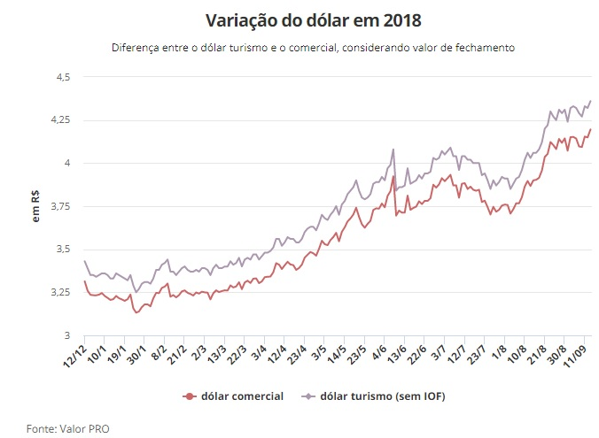

O dólar fechou em alta nesta quinta-feira (13) e atingiu novo valor máximo em relação ao real. Os investidores monitoram a cena eleitoral e o movimento do câmbio dos demais países emergentes, após a Turquia aumentar os juros, tirando a pressão sobre a moeda do país.
A moeda norte-americana subiu 1,11%, negociada a R$ 4,1952 na venda. É o maior valor de fechamento já registrado em relação ao real. Antes disso, a maior cotação havia sido em 21 de janeiro de 2016, quando a moeda chegou a R$ 4,163. Na máxima do dia, a moeda chegou a R$ 4,2046. O maior valor intradia já registrado foi no dia 24 de setembro de 2015, a R$ 4,2484. Já na mínima, a moeda chegou a recuar a R$ 4,1256. No acumulado do ano, a moeda dos EUA já sobe 26,61%. No mês de setembro, avança 3,02% e, na semana, 2,41%. O dólar turismo fechou negociado a R$ 4,3634, sem considerar a cobrança de IOF (Imposto sobre Operações Financeiras).
Nesta quinta (13), o Banco Central brasileiro ofertou e vendeu integralmente 10,9 mil swaps cambiais tradicionais, equivalentes à venda futura de dólares, rolando US$ 4,360 bilhões do total de US$ 9,801 bilhões que vencem em outubro. Se mantiver essa oferta diária e vendê-la até o final do mês, terá feito a rolagem integral.
